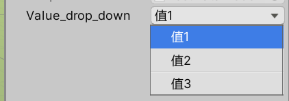
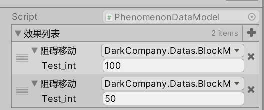
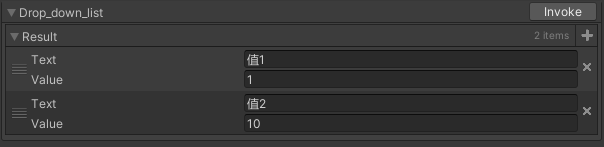

Odin字段功能说明
本文章主要为功能记录文章，研究Odin每个字段的功能并且予以一定的记录。
Odin的OdinAttributeOverview中对字段已经进行了详细的说明。每个详细内容都可以通过文档查询得知。但是其中隐藏了很多功能的实现，本文主要以字段为索引，辅以功能实现介绍为主。
抽象类
因为抽象类结构无法被实例化，可以使得OdinInspector反射子类实现的数据结构到面板上。进而使得可编辑数据有着动态修改的能力。
Label相关
ValueDropDown
ValueDropDown字段属性给Inspector中的对应字段栏目提供了一个下拉菜单UI。通过下拉菜单中的选项可以给字段赋值。简单示例如下：
 ```CSharp [ValueDropdown("drop_down_list")] public int value_drop_down;private IEnumerable drop_down_list = new ValueDropdownList
ValueDropdown属性中的ValuesGetter字段指明了下拉列表中的项目内容。该字段输入为一个string，指明获取列表方式。只要返回值是一个ValueDropdownItem类型的可以迭代的对象即可。而获取该对象的方式可以是
* 直接使用ValueDropdownList类型的数据结构来提供。
* 直接使用可迭代的序列化数据结构来提供
* 静态函数或者实例函数，返回一个可迭代数据结构来提供。更重要的是该方式可以通过一些方式获取到当前Unity编辑器中的数据结构。
该类型第一个值为Editor中显示数值，第二个值为实际数值。
除了可以修饰普通的属性字段外，还可以修饰列表类型字段，此时添加操作中的数值会变成下拉列表形式。简单示例如下：
<img src="../Odin字段功能说明assets/odin_key_2.png">
```CSharp
[ValueDropdown("drop_down_list")]
public List<int> value_drop_down;
private IEnumerable drop_down_list = new ValueDropdownList<int>
{
{"值1",1 },
{"值2",10 },
{"值3",100 },
};
备注事项
- 使用ValueDropdown字段功能时。可直接用数据结构指定下拉列表。此时目标数据结构实际只会调用一次构造。虽然其列表显示是不同实例，且持久化后实际是不同对象。但是目标下拉列表中的数据实际只会构造一次，简单情况如下。 
|
|
- 使用ValueDropdown字段功能时。如果使用函数类型列表，且修饰List容器类型，则获取目标函数会被调用多次。
字段属性功能描述
-
DisableGUIInAppendedDrawer： 当修饰List属性的时候会启用。如果为true表示每个子项目类型也
-
DisableListAddButtonBehaviour： 当修饰List属性的时候会启用。为true表示下拉列表不是作用在添加按钮上面，即添加按钮不会有下拉菜单，会自动添加一个属性的默认选项。
-
DrawDropdownForListElementsL： 当修饰List属性的时候会启用。为true表示每个子项也会添加下拉菜单。
-
IsUniqueList： 当修饰List属性的时候会启用。添加的每个子项为唯一的。
-
NumberOfItemsBeforeEnablingSearch： 开启搜索个数。当下拉列表中个数大于该值时会启动搜索栏。
Button相关
Button字段属性主要给Inspector中的对应字段栏目提供了按钮UI，一般用来修饰一些函数，简单示例如下：
备注事项
- 除了文档中情况，实际上Button也可以修饰有返回值的函数，当修饰该类型函数时，实际会出现一个Invoke按钮，相当于调用该函数。并且点击调用后，返回值会以Result的形式，经过Odin序列化呈现在InspectorUI当中。简单如下： 
|
|
List相关
Odin对于List容器类型主要提供了以下几个字段：
- AssetList
- TableList
- ListDrawerSetting
其中最常用的就是ListDrawerSetting字段。Odin默认对于数组类型，以及实现了IList的类型都会会使用ListDrawerSetting来进行序列化显示。
备注点：
- 如果泛型类型List
中T是一个可以实例化的类型，则Inspector以及持久化类型会以该类型为主。实际上此时添加按钮操作就是实例化一个T类型并添加进列表。 - 如果泛型类型List
中T是一个抽象类型(Abstract)，则Inspector会展现子类实现类的数据结构。并且添加按钮操作实际上会选择子类并实例化出来。持久化序列也会以子类的格式保存起来。
字段属性功能描述
- ListElementLabelName：
列表元素中每个元素Label命名来源。该字段值为一个string，Odin会通过反射的方式，经有List
中的类型T来获取该字段的值。因为是经过类型T，所以会以该类型T来解读数据结构，如果是静态变量，那么只会获得该类型的静态变量。